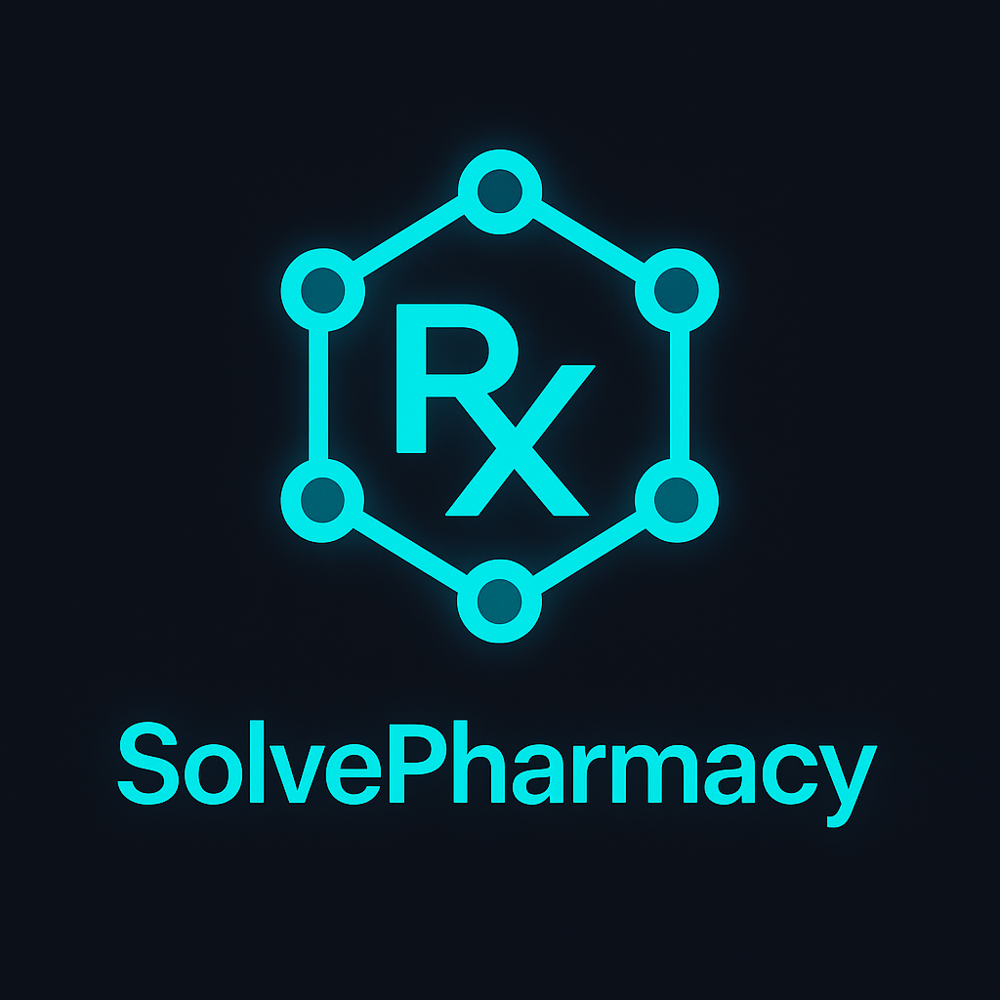

SolvePharmacy 6.0
Applied Pharmacology Intelligence System for medication knowledge, pharmacology learning, confidence, risk awareness, governed recommendations, and report-ready education support powered by Core 12.0.
Core 12.0 Alignment
SolvePharmacy 6.0 is aligned to the SolveMotion Labs Core 12.0 architecture. The app does not own hidden medication scoring, duplicate pharmacology logic, or local recommendation engines. It collects structured pharmacology context, emits DomainSignal input, and renders immutable DTO output from CoreIntelligenceOrchestrator.
6.0 Intelligence Surfaces
Medication Knowledge
Organizes pharmacology and medication concepts into structured learning, reference, and decision-support surfaces.
Confidence and Risk
Surfaces confidence, uncertainty, missing evidence, and risk context from Core-owned DTO output.
Governed Recommendations
Converts Core 12.0 reasoning into guided next actions while preserving human oversight and no-local-computation rules.
Report Surfaces
Supports report-ready summaries for pharmacology learning, review, professional education, and institutional communication.
Features
- Deliver structured pharmacy and pharmacology learning modules
- Support role, career, and education progression
- Organize complex medication knowledge into practical guidance
- Surface confidence, risk, and missing-evidence context
- Render Core 12.0 recommendations and next actions
- Support professional report and education review surfaces
- Preserve render-only app behavior with no-local-computation rules
Who It Is For
Pharmacy Students
Users building structured medication knowledge, pharmacology understanding, and confidence.
Pharmacy Technicians
Professionals reinforcing medication knowledge, role readiness, and applied reference workflows.
Pharmacists and Educators
Practitioners and educators reviewing structured pharmacology intelligence, reports, and governance surfaces.
How It Is Used
Users access structured content, reinforce pharmacology learning, review confidence and risk signals, and use Core 12.0 recommendations to support safer, clearer education workflows. The application remains render-only while Core 12.0 owns the deterministic operational intelligence and deterministic operational intelligence.
Android APK: AAB build available for distribution.
Download for iPhone / iPadPlatform Role
SolvePharmacy 6.0 is part of the broader SolveMotion Labs ecosystem and supports the platform commercialization direction. Its pharmacology intelligence surfaces demonstrate how Core 12.0 can power enterprise-ready applied intelligence products while preserving governance, release gate discipline, and centralized reasoning ownership.